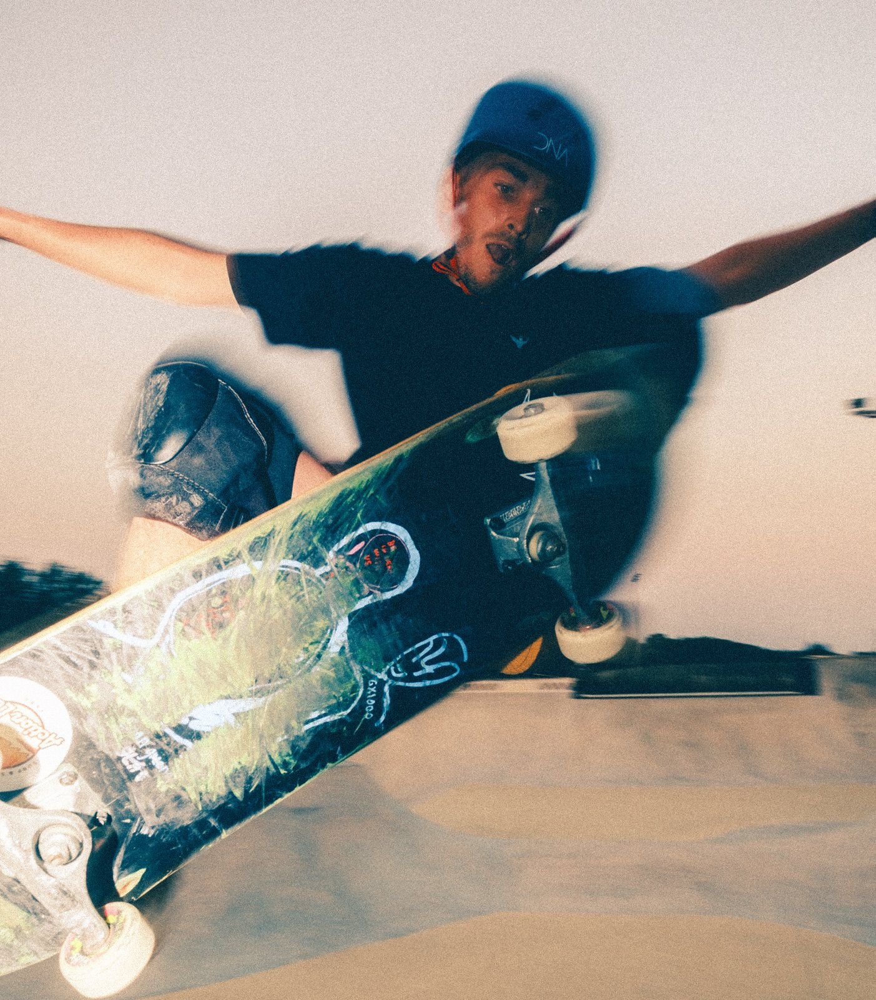
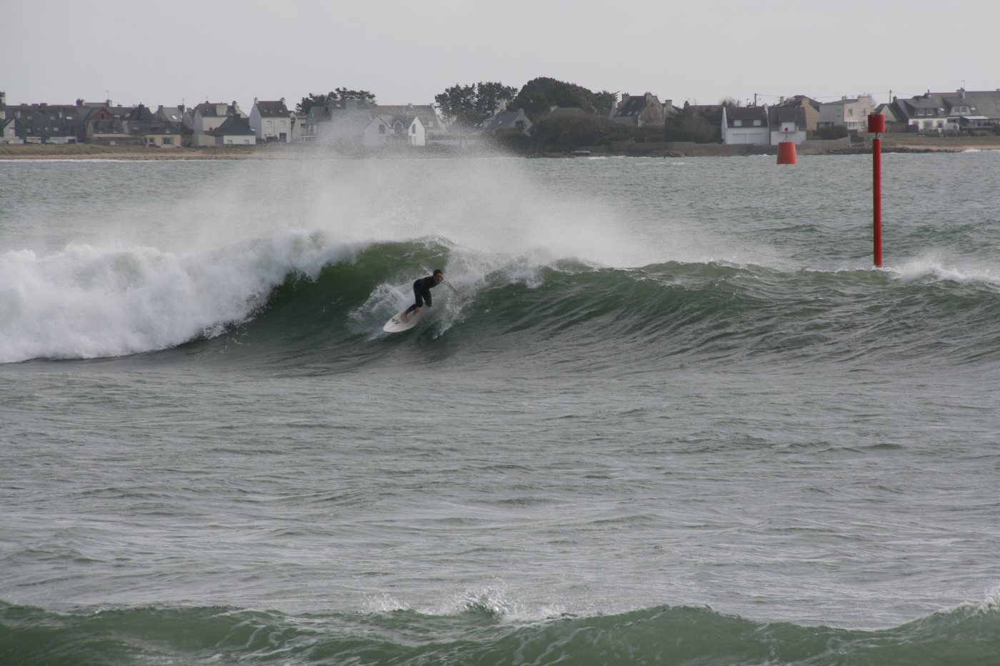
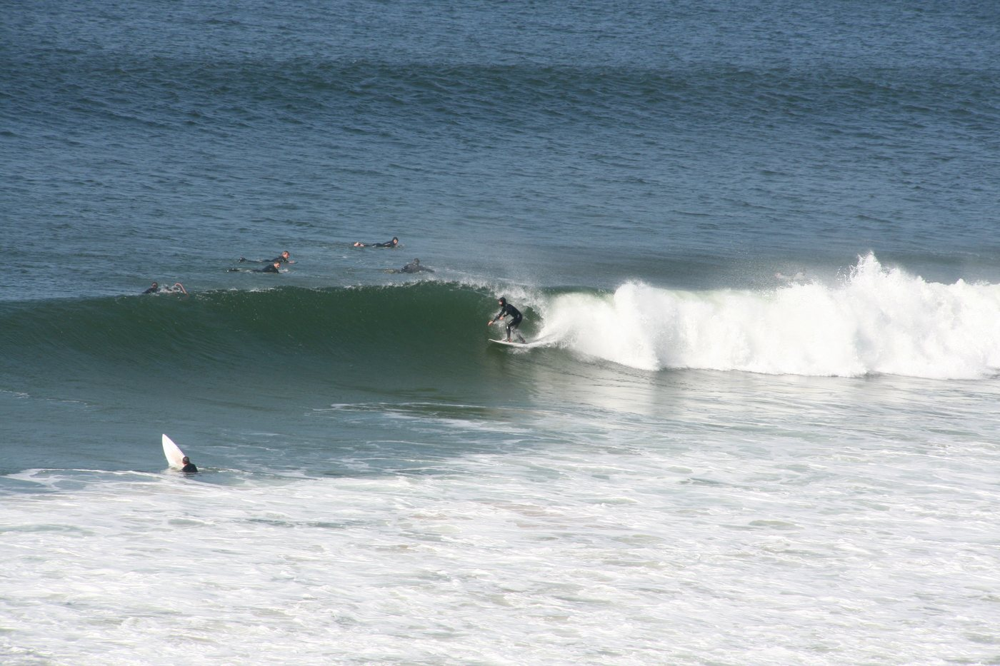
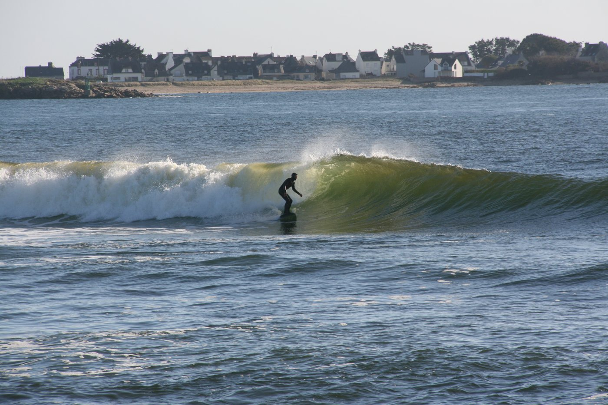
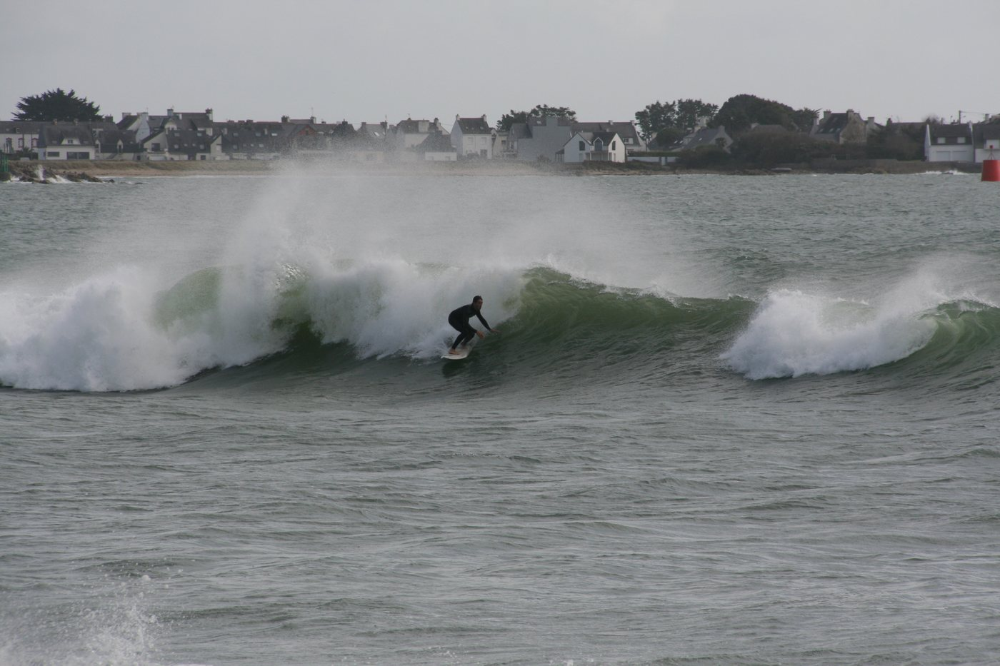
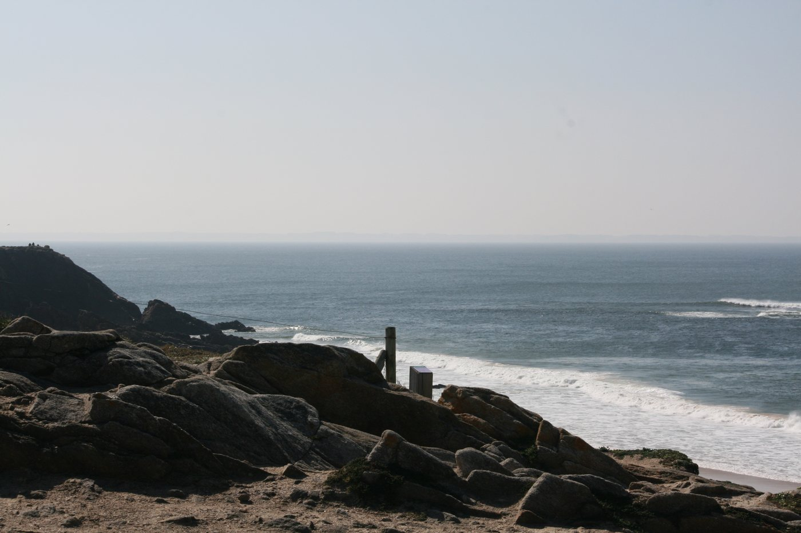
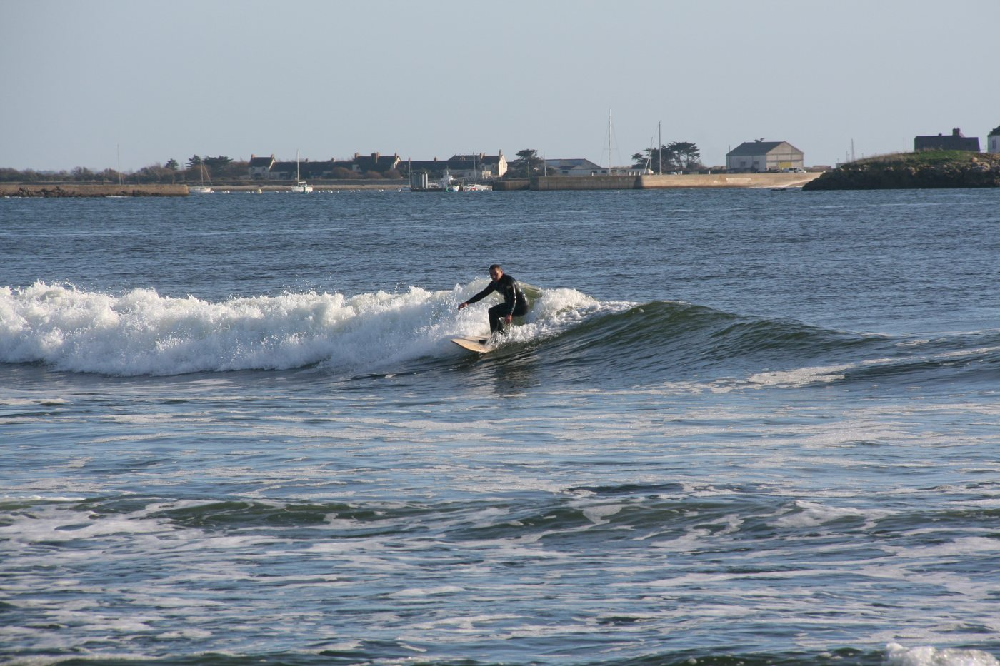
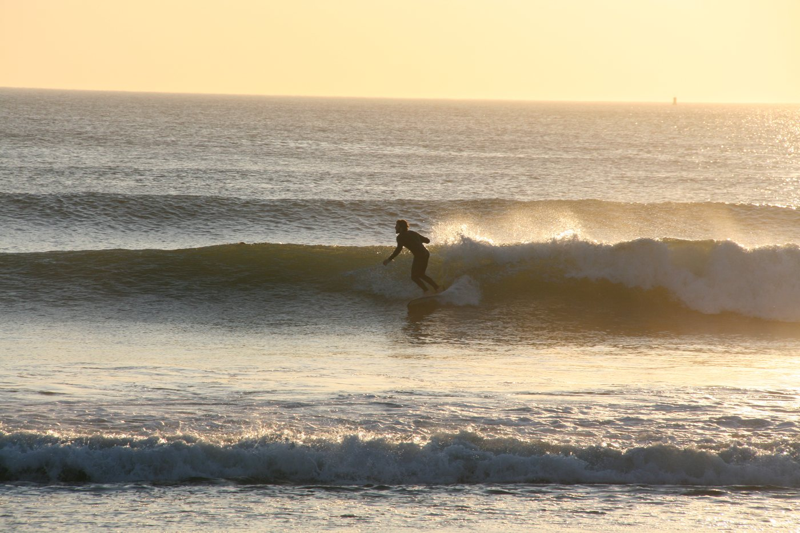
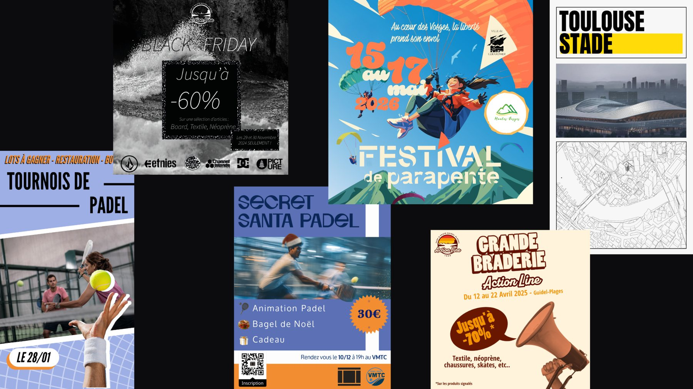
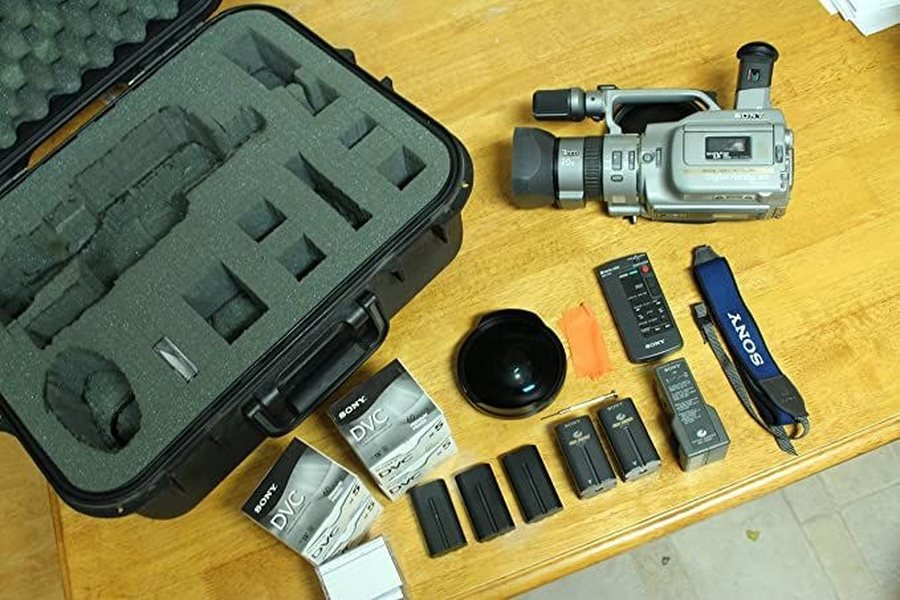

Vidéaste & créateur de contenu · surf · skate · lifestyle. Ancré en Bretagne.
Huit ans de planche sous les pieds. Je filme ce que je connais de l'intérieur : le skate, le surf, la culture qui va avec. Pas un décor. Un terrain.
La VX1000, c'est le rendu brut du skate des années 2000. Je filme avec pour l'ambiance, pas pour la définition. Le feeling avant la technique.

Reef break
Golden hour
Longboard
Reef break
Line-up
Beach break
Spot check
Je m'appelle Matisse, 23 ans, basé dans le Morbihan.
Surfeur et skateur depuis huit ans, je baigne dans la culture board au quotidien, et c'est ce qui nourrit mon travail d'image. Je filme à la VX1000 par goût du rendu brut et authentique, et je touche aussi à la photo et au graphisme : affiches d'événements, contenus pour les réseaux, identité visuelle.
En parallèle, je suis un Bachelor Marketing et Événementiel Sportif. Double casquette : je crée du contenu, mais je pense aussi à ce qu'il raconte et à ce qu'il rapporte. Ligne éditoriale, partenariats, performance.
Je cherche une alternance où mettre les deux au service d'un univers qui me passionne : le sport, l'outdoor, la glisse.
